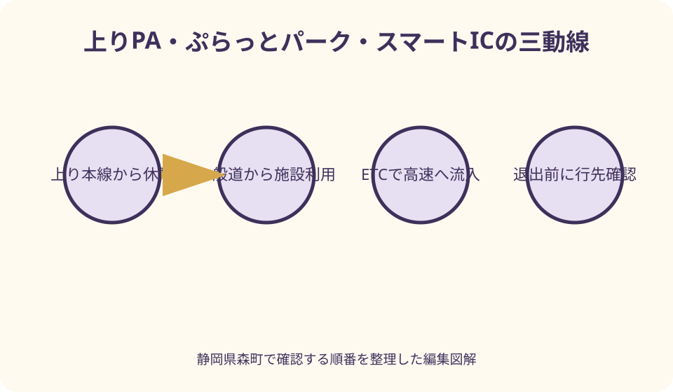
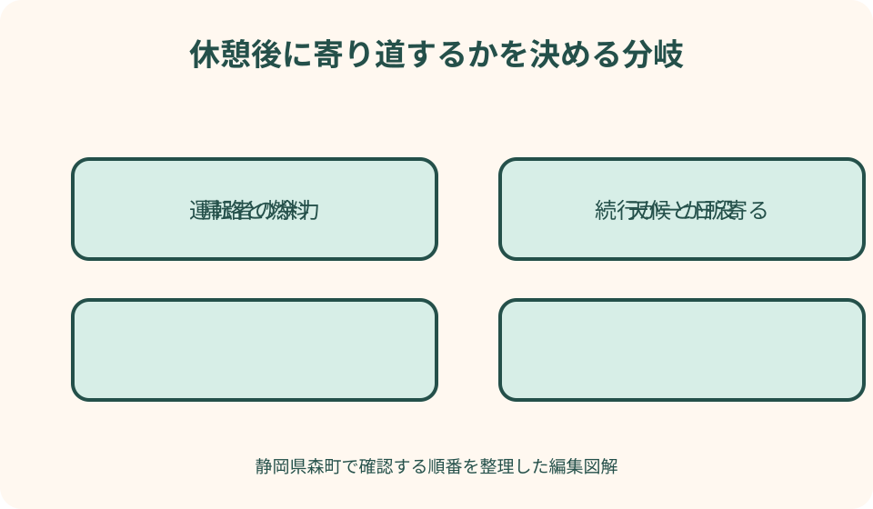

高速道路・休憩・寄り道｜最終確認 2026-08-10
静岡県森町・遠州森町PA上り完全案内｜東京方面の休憩・一般道入口・町内への寄り道
遠州森町PAは上りと下りで進行方向も所在地表記も施設内容も異なり、一般道側には、買い物や食事のためのぷらっとパークと、高速道路へ出入りする遠州森町スマートICがあります。名前が近くても役割は同じではありません。休憩だけなのか、一般道から施設へ入るのか、森町で高速を降りるのかを先に分けると、入口と経路の取り違えを防げます。

編集イラスト最初に決めるのは、施設名ではなく進行方向と目的
新東名を東へ進み、東京・静岡方面へ向かう車が使うのが上りです。西へ進む名古屋方面の下りとは道路の反対側にあり、同じ遠州森町PAという名前でも、駐車場、建物、店舗は別です。検索結果や地図の写真だけで選ばず、NEXCO中日本のページ見出しにある「上り：東京方面」を最初の照合点にします。
次に、立ち寄る目的を一文で決めます。「高速を走りながら休憩する」「一般道から食事や買い物に入る」「森町で高速を降りて観光する」「森町から高速へ乗る」では、使う入口も確認項目も変わります。全員が遠州森町PAを目指していても、運転者が想定する経路が違えば現地で迷います。
カーナビへ入力するときも、名称だけでは足りません。上り施設、上りぷらっとパーク、遠州森町スマートICのどれを目的地にしているかを画面で読み上げ、同乗者にも共有します。到着直前に分岐を見て判断するのではなく、出発前に公式の敷地案内と周辺案内を見ておくのが安全です。
本稿は2026年8月10日に公式ページを確認して整理しています。店舗、開閉時間、駐車台数、充電設備の稼働、工事規制は変わることがあります。固定された紹介記事を最終回答にせず、当日はNEXCO中日本の施設ページ、交通情報、現地標識の順で確かめてください。
上りと下りを取り違えないための読み方
上りの施設ページは所在地を静岡県周智郡森町円田と案内しています。一方、町のスマートIC案内では、上り線の設置場所を草ケ谷、下り線を一宮と示しています。ページが扱う範囲によって地名表記が異なるため、一つの住所だけを覚えて向きを判断するのではなく、「上り・東京方面」という道路上の表示を優先します。
高速走行中の人は、進行方向と同じ側のPAへ入ります。中央分離帯を越えて反対側の施設へ移る場所ではありません。下り側で紹介される料理や商品を上りでも扱っていると考えず、上りの「店舗情報」と「施設・サービス案内」を開いて、当日必要なものが上り側にあるかを確認します。
一般道から向かう人も、上りと下りを自由に歩いて往来できる前提を置かないことが大切です。目的の店舗が上りか下りかを確認し、それぞれのぷらっとパーク案内へ進みます。「遠州森町PAに着けばどちらにも行けるだろう」という見込みは、駐車後の移動や予定の崩れにつながります。
同乗者へ説明するときは、地名よりも方角と次の目的地を使うと伝わります。たとえば「浜松側から東京方向へ進む途中の上り」「休憩後は掛川側へ進む」という言い方です。帰路に同じ施設へ寄るつもりでも、帰路が西向きなら下り側となり、往路と同じ店や設備とは限りません。
待ち合わせ場所にも「遠州森町PA」だけを書かないでください。「上り・東京方面の建物入口」「上りぷらっとパーク側」など、道路内外のどちらから来るかまで指定します。高速側と一般道側で互いに迎えに行けると思い込まず、施設の通行区分と現地案内に従う必要があります。
休憩場所として見るべき設備と順番
休憩の第一目的は、運転を続けられる状態へ戻すことです。駐車したら、食事や土産より先に、運転者の眠気、肩や脚のこわばり、同乗者の体調を確認します。短時間でも車外へ出て姿勢を変え、トイレと水分補給を済ませ、出発時刻を一度見直す方が、買い物だけで車へ戻るより実用的です。
NEXCO中日本の上り施設ページには、トイレに加えて、バリアフリートイレ、オストメイト対応、ベビーチェア付きトイレ、パウダールーム、AEDが掲載されています。ただし、必要な設備の位置や利用状態は敷地案内と現地表示で確認します。介助が必要な人を車内に残したまま、同行者が長く探し回る予定にはしません。
車いすや歩行補助具を使う人がいる場合、障害者用駐車スペースの掲載台数だけで利用を保証されたと考えないことが重要です。混雑、工事、除雪、車両の停め方によって移動条件は変わります。空きがなければ無理な乗降をせず、係員や現地案内を確認し、次の休憩施設へ進む判断も持ちます。
乳幼児連れでは、おむつ替えや食事の前に、保護者が一人で対応できる範囲を決めます。駐車場は大型車も行き交うため、子どもを先に降ろして待たせません。建物へ入る人、荷物を持つ人、子どもの手をつなぐ人を決め、戻る場所を車両番号や駐車列で共有します。
Wi-Fi、喫煙所、ハイウェイスタンプなども公式ページに案内がありますが、休憩時間を延ばす要素にもなります。運転交代や到着予定がある日は、必要な用事を先に終え、趣味の利用は残り時間で行います。出発前には同乗者全員が戻ったこと、荷物、灯火、周囲の歩行者を確認します。

店舗・食事・充電は当日の公式表示で確かめる
2026年8月10日に確認した上り施設ページは、フードコート一店とショッピングコーナー一店を掲載し、写真例として食事と土産を紹介しています。しかし、写真に写る料理が訪問日に必ず注文できること、同じ価格であること、売り切れないことまでは保証しません。店頭メニューと営業表示を最終確認にします。
食事を旅程の中心にするなら、出発前に上りの店舗情報を開き、営業時間、休業案内、提供状況を確認します。到着してから選べない場合に備え、軽食へ切り替える、次の掛川PAまで進む、森町内で高速を降りるという代案を用意します。空腹のまま運転を延長しないよう、車内にも非常用の飲料と補食を置きます。
上りページにはEV急速充電スタンドも掲載されています。ただし、口数の表示だけで待ち時間や稼働を判断できません。車両の対応規格、残量、次の充電地点を出発前に確認し、NEXCOページから案内される最新稼働情報も見ます。充電待ちを食事時間に重ねる場合も、呼び出しや終了時刻を忘れないようにします。
ガソリンスタンドの有無も、PAという名称から推測してはいけません。必要な燃料種別と残量を高速へ入る前に確認し、施設ページの設備欄で給油可否を確かめます。給油設備が見当たらない場合は、航続可能距離を過信せず、経路上の次の給油場所または一般道側の給油場所を安全に選びます。
一般道から使うぷらっとパークとスマートICは別物
ぷらっとパークは、一般道からPAの商業施設などを利用するための入口です。NEXCO中日本の上り施設ページは、確認日現在、上りぷらっとパークに開閉時間と一般道側の駐車条件を掲載しています。数字は変更され得るため記事から暗記せず、訪問日の公式一覧で上り欄を見てください。
遠州森町スマートICは、ETC車が新東名へ出入りするための設備です。森町公式は24時間、上下線の全方向、ETC車載器搭載車を対象と案内し、車長条件も示しています。町公式はゲート前で一旦停止し、バーが開いてから通行するよう明記しています。一般のETCレーンと同じ速度感で通過しようとしないでください。
最も注意したいのは、スマートICから高速へ流入した後の動線です。森町公式は、遠州森町スマートICから流入後は遠州森町PAの施設を利用できないと明記しています。つまり、一般道から食事や買い物を済ませてから高速へ乗りたい場合、先にぷらっとパークを利用し、その後、道路案内に従ってスマートICへ向かう順序を考える必要があります。
反対に、高速走行中に上りPAへ入り、休憩後にスマートICから一般道へ出て森町へ寄る場合も、PAの敷地案内と出口標識を現地で確認します。買い忘れに気づいても、出口通過後に逆走や後退はできません。次の安全な場所まで進み、経路を組み直します。
一般道側駐車場は、長時間の観光駐車場や車中泊場所として当然に使えるものではありません。開閉時刻、利用目的、駐車可能時間、満車時の扱いはNEXCO中日本の最新案内と現地表示に従います。周辺道路や農道への路上駐車、店舗利用者以外の放置は、地域の通行と施設運用を妨げます。
森町内へ寄るかどうかは、休憩後の余力で決める
森町公式は、遠州森町スマートICの整備によって町内の大部分がICアクセス圏に入る効果を案内しています。また、新東名開通一年後の資料では、当時の観光交流客数や事業所アンケートに表れた変化を公表しました。これらは高速道路が町への入口になった背景を示しますが、今日の混雑や所要時間を保証する資料ではありません。
寄り道を決める前に、運転者へ「あと何分なら無理なく運転できるか」を聞きます。目的地を増やす前に、帰宅時刻、天候、日没、燃料、同乗者の体調を確認します。PAで休んだから予定を必ず追加するのではなく、休んだ結果、予定を減らす判断ができることも休憩の価値です。
小國神社、ことまち横丁、アクティ森、町なかの茶店などは方向も滞在時間も同じではありません。PAから近そうという印象だけで一日に詰め込まず、主目的を一か所にします。公式観光案内で駐車、営業、催しを確認し、戻るICを遠州森町スマートICにするか、森掛川ICなど別の経路にするかをナビで比較します。
季節の催しや紅葉期は、通常より進入や駐車に時間がかかる可能性があります。過去の混雑情報を固定的な所要時間へ変換せず、当日の交通情報を確認します。高速へ戻る時間が厳しいなら、PAで森町の土産を選び、町内訪問は別日に一つの目的として計画する方が、地域を落ち着いて見られます。

良い点
上り施設には、食事、買い物、トイレ、休憩、バリアフリー、充電など、走行を中断して状態を整えるための情報が一つの公式ページに集まっています。東京方面へ進む人が、次の掛川PAまで進む前に体調と車両の状態を見直せる地点として使えることが基本的な利点です。
一般道側のぷらっとパークと、高速出入り用のスマートICが近接しているため、高速利用者だけでなく町内側から施設を利用する選択肢があります。ただし、この利点は二つの入口の役割を理解して初めて活かせます。案内を読まずに同じ入口と考えると、むしろ予定を崩します。
町の公式資料を合わせて読むと、PAが単独の休憩施設ではなく、森町と新東名をつなぐ玄関の一つとして整備されてきた経緯が分かります。短い休憩で終える日も、町内へ寄る日も選べます。通過と滞在をどちらかに決めつけず、体調と時間から選べる点が実用的です。
注文したい点
利用者が最も迷いやすいのは、上りPA、上りぷらっとパーク、スマートICの関係です。個別ページには情報があっても、「一般道から施設利用」「一般道から高速流入」「高速から休憩」「高速から一般道退出」という四つの動線を一枚で比較できる案内が、検索画面から見つけやすくなると判断しやすくなります。
設備一覧は充実していますが、利用者が知りたいのは有無だけではありません。駐車場所から入口までの歩行距離、夜間の見え方、混雑時の代替、設備停止時の次の候補も重要です。固定ページと当日の稼働・混雑情報が明確につながると、介助者や充電利用者の負担を減らせます。
町内への寄り道案内も、観光地を多く並べるだけでは判断しにくい面があります。所要時間を保証せずに、短時間、半日、悪天候時という条件別に公式確認先を示し、戻るICや公共駐車場まで一緒に案内できれば、生活道路への迷入や無理な詰め込みを抑えられます。
代案・結論
高速を走行中なら、上り・東京方面の表示を確認してPAへ入り、最初に運転者と同乗者の状態を整えます。食事、買い物、充電はその後です。必要な設備が使えない、混雑が強い、時間が不足する場合は、無理に全用事を済ませず、次の公式案内のある休憩施設へ分けます。
一般道から施設だけを使うなら、上りぷらっとパークの最新の開閉時間と駐車条件を確認します。高速へ乗る予定があっても、ぷらっとパークとスマートICを同じ入口と考えません。先に施設を利用し、その後、案内に従ってETCカード、車長条件、ゲート一旦停止を確認して流入します。
町内観光へ出るなら、目的地は一つに絞り、営業時間、駐車、催し、帰路を当事者公式で確認します。休憩後も疲れが残る、天候が悪化した、日没が近い場合は寄り道を中止します。PAで休めたことを成果とし、森町への訪問を別日に回す方が安全で、地域でも落ち着いて過ごせます。
家族の共有メモには、進行方向、入る入口、休憩の目的、出発予定、寄り道の有無、戻るICを書きます。口頭の「森町のPAで休もう」だけではなく、「上り本線から休憩」「一般道のぷらっとパーク」「スマートICから流入」のどれかを記せば、運転交代しても判断が引き継がれます。
大石の視点
私は、遠州森町PA上りを紹介するとき、名物を先に並べるより、入口と出口を先に描くべきだと考えます。現地で役立つ情報は、施設の魅力だけではなく、誰が、どちらから入り、どこへ出るかです。とくにぷらっとパークとスマートICは名前の近さで混同しやすく、順序の説明が安全に直結します。
森町へ寄るか迷ったら、町の魅力を一日で回収しようとしないことです。休憩後に余力があれば一か所へ行き、なければ高速へ戻る。その判断を弱気と考える必要はありません。運転者の集中力、同乗者の体調、地域の道路への配慮を守る方が、次にまた森町へ来られる行程になります。
上りPAは、通過する人と町へ入る人が判断を切り替える場所です。公式ページを出発前、到着時、退出前の三回見る習慣を勧めます。出発前は方向と設備、到着時は現地の利用状態、退出前は本線へ戻るか一般道へ出るかを確認する。この三回が、検索情報を実際の安全な移動へ変えます。
公式情報・確認先
掲載内容は次の一次情報を基礎に整理しました。営業、料金、催し、交通は変わるため、出発前または手続き前にリンク先で最新情報を確認してください。
- 施設・サービス案内 遠州森町PA上り（NEXCO中日本、2026-08-10確認）
- ぷらっとパーク（NEXCO中日本、2026-08-10確認）
- 新東名 遠州森町スマートIC（静岡県森町、2026-08-10確認）
- 『新東名高速道路開通から1年』効果とりまとめ（静岡県森町、2026-08-10確認）